MATLAB R2026b · Embedded AI tutorial 2
Build a Vibration Severity Monitor from Your Own IMU Recordings on Arduino Nano 33 BLE Sense
This example shows how to train, compress, and deploy a vibration severity monitor using data recorded with the same Arduino® Nano 33 BLE Sense that runs the model. Every second, the board reports whether it is still, vibrating lightly, or vibrating strongly, and flags vibration it does not recognize.
In the first tutorial, the detector was trained on a public ceiling-fan dataset. On the board it reported every window as unknown, because the board and its surroundings looked nothing like the training data. This domain shift is the most common reason embedded AI models fail in the field. This example removes it by training on 45 recordings made with the board's own LSM9DS1 IMU, so the deployed model reads exactly the sensor and settings it was trained on.
| Level | Recorded as | Character | LED |
|---|---|---|---|
| 0, no vibration | NORMAL | board at rest, sensor noise only (≈0.001 g RMS) | green |
| 1, light vibration | TAPPING | short impulsive bursts (≈0.05 g RMS) | yellow |
| 2, strong vibration | GENTLE_SHAKING | sustained large motion (≈0.13 g RMS) | red |
| unrecognized | — | classifier says level 0, autoencoder disagrees for 3 s | blue |
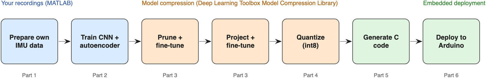
- Prepare Data: inspect the logger's timing, resample to a uniform 100 Hz grid, handle board orientation, and split by recording (
Part1_PrepareData.m). - Train Networks: compare against an RMS-threshold baseline, train the classifier and the autoencoder, and examine what the autoencoder finds (
Part2_TrainNetworks.m). - Compress Classifier: Taylor pruning and projection, each followed by fine-tuning (
Part3_CompressClassifier.m). Optionally, first explore how far each technique can go (Part3a_ExploreCompression.m). - Quantize Networks: convert both networks to 8-bit integers (
Part4_QuantizeNetworks.m). - Generate Code: generate C code for the Arm Cortex-M4 and verify it against MATLAB (
Part5_GenerateCode.m). - Deploy to Arduino: build, flash, and test the monitor live (
Part6_DeployToArduino.m).
Products: Deep Learning Toolbox, Deep Learning Toolbox Model Compression Library, MATLAB Coder, MATLAB Coder Interface for Deep Learning, Embedded Coder, Fixed-Point Designer, Statistics and Machine Learning Toolbox. Simulink is optional and is used only to export the networks as Simulink models. Signal Processing Toolbox is not required.
Hardware: Arduino Nano 33 BLE Sense Rev1 (LSM9DS1 IMU); Arduino IDE 2 with the Arduino Mbed OS Nano Boards core and the Arduino_LSM9DS1 library.
1Prepare Data
About the Recordings
The data was logged from the board's LSM9DS1 IMU with the Arduino_LSM9DS1 library at a nominal 100 Hz: 15 recordings of 30 seconds for each class, one folder per class. Each row holds a microsecond timestamp, the acceleration in g, the angular rate in degrees per second, and the label.
head(readtable(fullfile(dataFolder,"NORMAL","NORMAL_001.csv")),4) timestamp_us ax ay az gx gy gz label
____________ _________ ________ _______ _______ ______ ______ __________
1.1793e+08 -0.009888 0.01416 0.99499 0.67139 7.6904 1.5259 {'NORMAL'}
1.1794e+08 -0.009399 0.014771 0.99524 0.79346 7.3853 1.5259 {'NORMAL'}
Check the Sampling
A real logger is never perfectly regular. Most sample intervals are 10 ms, but about 80 per recording are 20 ms, because the logger occasionally missed a sample.
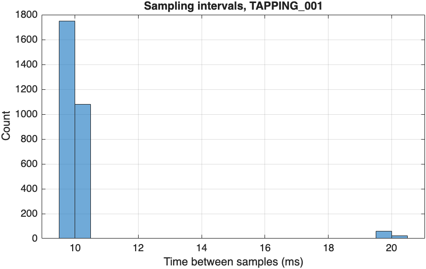
The networks need evenly spaced samples, so loadRecordings uses the timestamps to interpolate each recording onto a uniform 100 Hz grid.
recordings = loadRecordings(dataFolder,100); Class GroupCount mean_Duration sum_MissedSamples
______________ __________ _____________ _________________
NORMAL 15 29.937 1192
TAPPING 15 29.941 1169
GENTLE_SHAKING 15 29.935 1181
Look at the Signals
Tapping produces short spikes, and shaking produces large, continuous motion on both sensors. The mean of each channel is removed so that gravity and the gyroscope bias do not hide the motion.
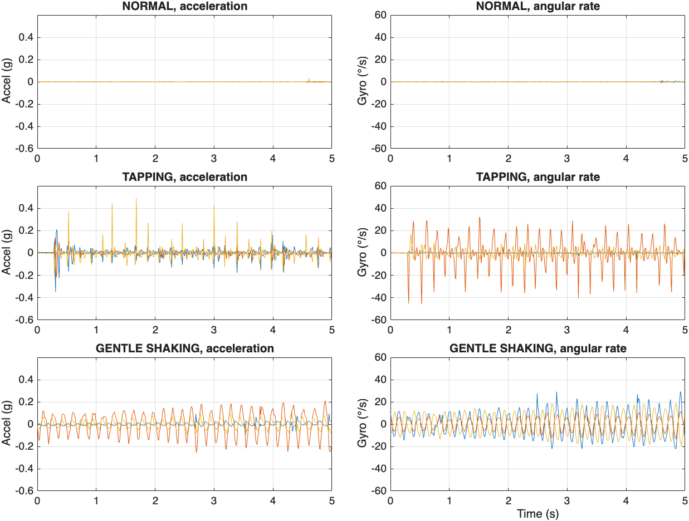
Check the Board Orientation
The mean acceleration of a recording is the gravity vector, which shows how the board was oriented. The NORMAL recordings were made face up and face down, while the shaking recordings cover many angles.
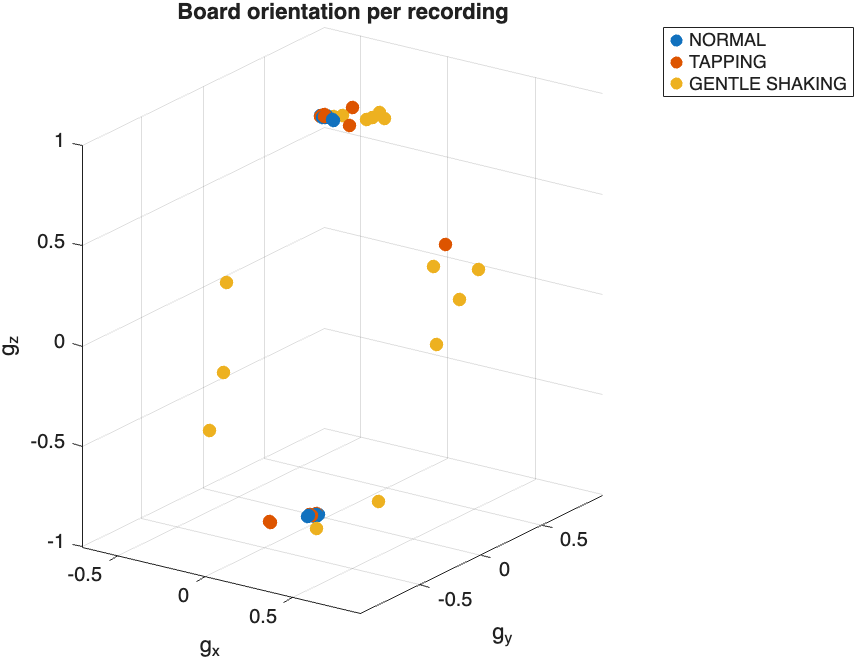
A network that saw the raw signal could learn the shortcut "tilted board means shaking", which would fail as soon as the board is mounted differently. Every feature in this example removes the mean of each window first, so the orientation cannot be used.
Split the Data by Recording
Use 9 recordings per class for training, 3 for validation, and 3 for testing. Windows from the same 30 s recording share orientation and handling, so splitting whole recordings, rather than windows, keeps the test honest.
recordingSplit = splitRecordings(recordings.Class,[9 3 3]);Cut the recordings into one-second windows of 100 samples by 6 channels. Training windows overlap by 50%; validation and test windows do not overlap.
numWindows =
1566 261 261
Vibration Energy per Class
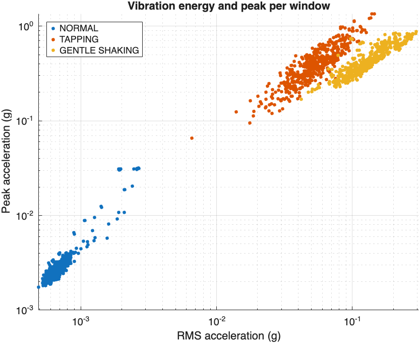
The classes are ordered by energy, but the tapping and shaking clusters touch, and at the same energy a tap has a higher peak than a shake. A single peak threshold would get the order wrong. A few NORMAL windows also reach about 0.03 g; they are examined in Step 2.
2Train Networks
Start with a Baseline
Before training a network, check what a simple rule achieves. A decision tree with two splits on the log RMS acceleration amounts to choosing two thresholds.
baseline = fitctree(log10(rmsOf(windowsTrain)),labelsTrain,MaxNumSplits=2);
accuracyBaseline = 100*mean(predict(baseline,log10(rmsOf(windowsTest))) == labelsTest)accuracyBaseline = 98.8506
Vibration energy alone separates most windows. Its three mistakes are vigorous taps classified as shaking: telling them apart needs the shape of the signal, an isolated impulse versus continuous motion.
Train the 1-D CNN Classifier
The classifier reads the mean-removed raw window, 100 time steps by 6 channels, scaled per channel. Global average pooling makes the prediction independent of where in the window a tap occurs.
layersCls = [
sequenceInputLayer(6,MinLength=100)
convolution1dLayer(5,16,Padding="same")
batchNormalizationLayer
reluLayer
maxPooling1dLayer(2,Stride=2)
convolution1dLayer(5,32,Padding="same")
batchNormalizationLayer
reluLayer
maxPooling1dLayer(2,Stride=2)
convolution1dLayer(3,32,Padding="same")
batchNormalizationLayer
reluLayer
globalAveragePooling1dLayer
fullyConnectedLayer(32)
reluLayer
fullyConnectedLayer(3)
softmaxLayer];
netCls = trainnet(XTrain,labelsTrain,layersCls,"crossentropy",optionsCls);
accuracyCls = testnet(netCls,XTest,labelsTest,"accuracy",InputDataFormats="TCB")accuracyCls = 100
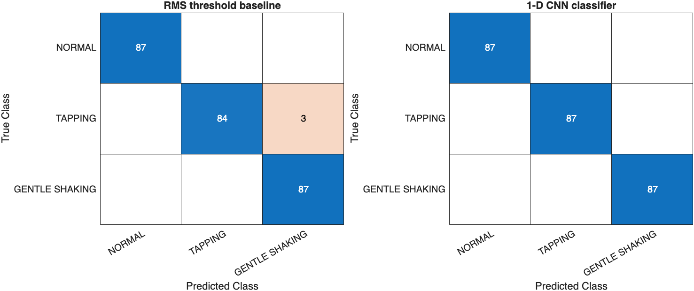
The CNN also classifies the three boundary windows that the threshold got wrong. With only three test recordings per class, treat the exact percentage with care: it shows that the classes are well separated in new sessions, not that the model never makes a mistake.
The supporting function plotNetworkArchitecture draws each layer as a box whose color shows the layer type and whose height grows with the number of channels. The output size of each layer is printed below it. Max pooling halves the time axis twice, from 100 to 25 steps, and global average pooling collapses it, so the fully connected layers see a single 32-element summary of the whole second.
plotNetworkArchitecture(netCls,[100 6],"Classifier: 1-D CNN on the 100 × 6 IMU window");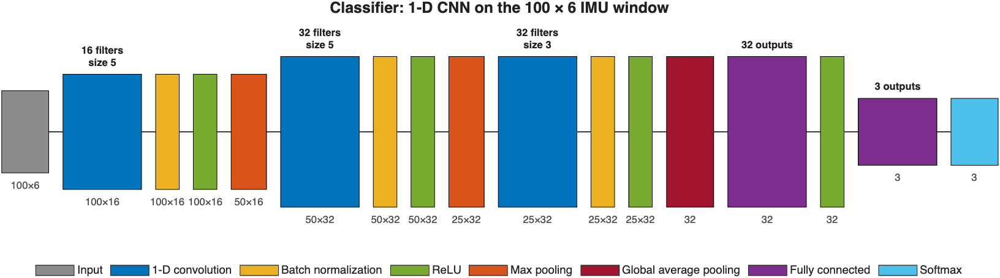
Train the Autoencoder on NORMAL Windows
The autoencoder learns 24 motion indicators of an undisturbed board (log RMS, crest factor, kurtosis, and high-frequency energy fraction per channel) and reconstructs them through a 6-neuron bottleneck.
layersAE = [
featureInputLayer(24)
fullyConnectedLayer(32)
reluLayer
fullyConnectedLayer(6)
reluLayer
fullyConnectedLayer(32)
reluLayer
fullyConnectedLayer(24)];
netAE = trainnet(ZTrain,ZTrain,layersAE,"mse",optionsAE);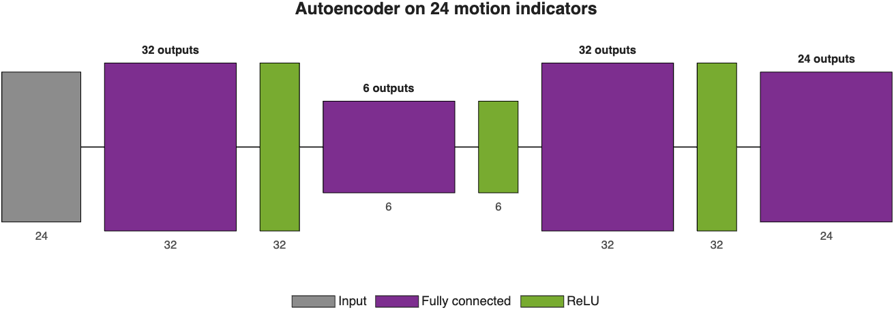
Choose a Robust Anomaly Threshold
Most NORMAL validation windows have a tiny reconstruction error, but a few are very large:
prctile(scoreValNormal,[50 90 95 99]) = 0.1713 0.3543 2.5082 72.2752
A 99th-percentile threshold would be pulled up by these few windows. Instead, use the median plus five scaled median absolute deviations of the log score, which ignores a handful of outliers.
logScore = log10(scoreValNormal);
aeThreshold = 10^(median(logScore) + 5*1.4826*mad(logScore,1))aeThreshold = 1.5197
Find What the Autoencoder Found
Class GroupCount mean_Flagged
______________ __________ ____________
NORMAL 87 0.091954
TAPPING 87 1
GENTLE_SHAKING 87 1
The autoencoder flags every tapping and shaking window, and also 8 windows inside NORMAL recordings.
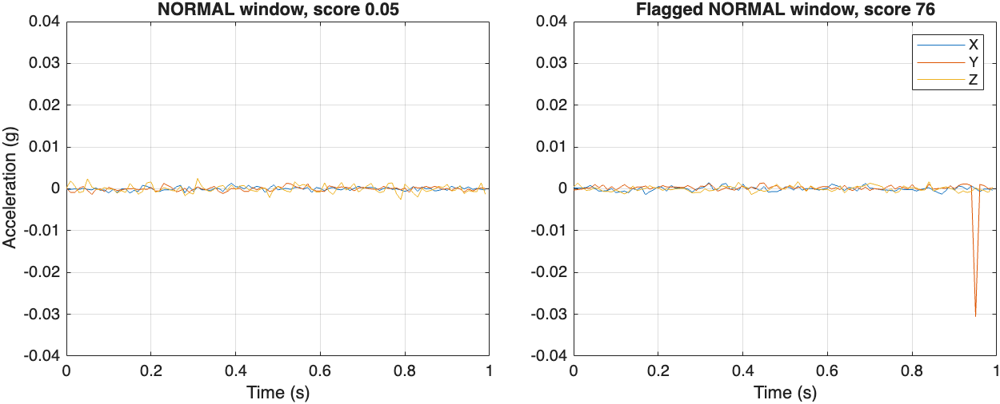
| NORMAL test windows | Count | Median peak |
|---|---|---|
| Not flagged | 79 | 0.0021 g |
| Flagged by the autoencoder | 8 | 0.0304 g |
The flagged windows contain small real bumps, such as someone touching the table during a NORMAL recording. The labels describe a whole 30 s recording, but the autoencoder judges each second on its own and notices them. The classifier, trained on recording labels, calls these windows level 0; the autoencoder reports them as unrecognized vibration. This is what the hybrid design adds.
Export Networks to Simulink
exportNetworkToSimulink converts a network into a Simulink model with one block per layer. With FrameBased=true, the model takes a whole 100-by-6 window at each time step, which the max pooling layers need. You can also inspect the networks interactively with analyzeNetwork(netCls).
exportNetworkToSimulink(netCls,ModelName="vibrationSeverityClassifier",FrameBased=true);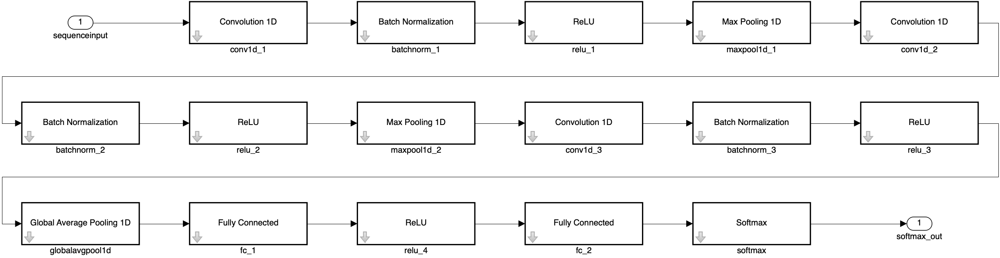
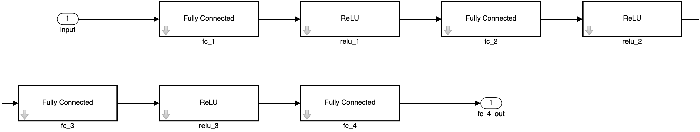
3Compress Classifier
Analyze Network for Compression
In Deep Network Designer, open the network with deepNetworkDesigner(netCls) and click Analyze for Compression. The supporting function exportCompressionAnalysis shows the same report in a separate window and saves it as an image.
exportCompressionAnalysis(netCls,fullfile(projectFolder,"images","compression-analysis.png"))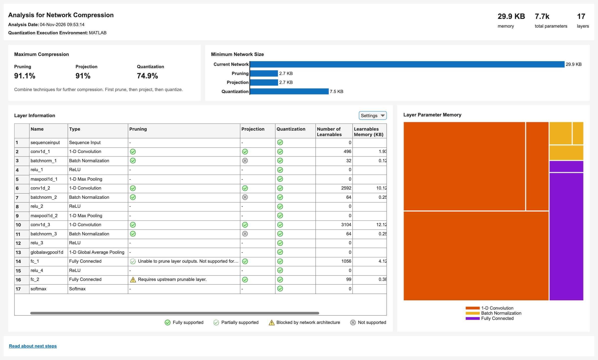
The report estimates that pruning alone could remove up to 91.1% of the parameter memory, projection up to 91%, and int8 quantization 74.9%. These maximums are structural limits, regardless of accuracy. As in the first tutorial, the second and third convolution layers hold most of the weights and the computation.
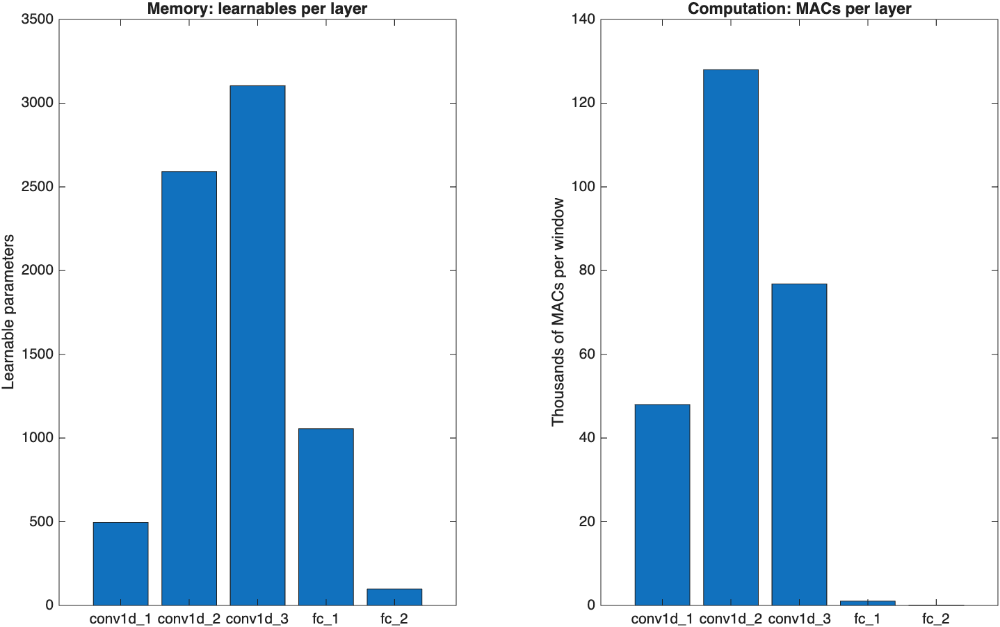
Explore Compression Design Space
The optional script Part3a_ExploreCompression.m estimates what each technique costs in accuracy. neuronPCA shows how many directions each layer's activations really use.
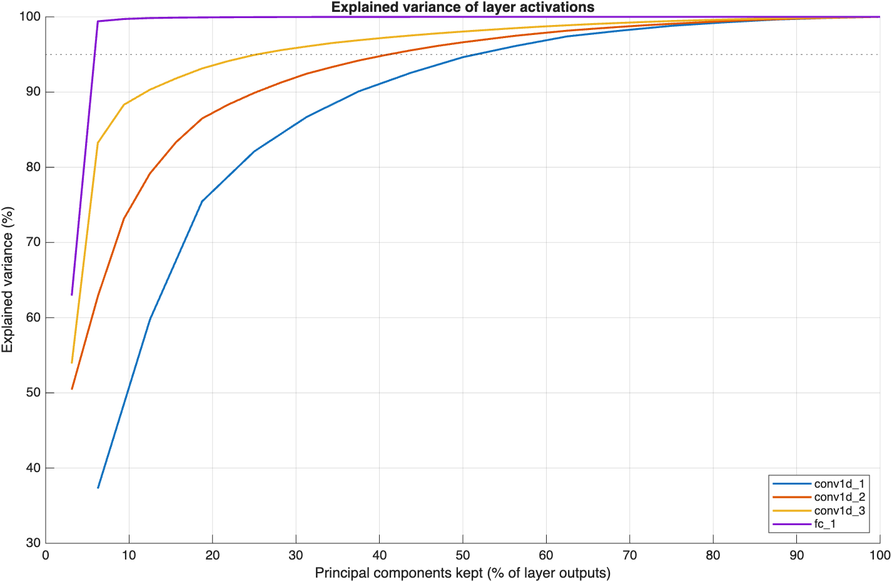
The curves rise faster than in the first tutorial. fc_1 is extremely redundant: two of its 32 directions carry more than 99% of the variance, and conv1d_3 reaches 95% with a quarter of its directions. Separating no, light, and strong vibration is an easier task, and the network has more capacity than it needs.
Apply each technique at increasing strength and measure the test accuracy, once directly ("one-shot") and once after 15 epochs of fine-tuning.
prunableNet = accumulateTaylorScores(netCls,XTrain,TTrain);
netPruned = dlnetwork(updatePrunables(prunableNet,MaxToPrune=numToPrune));
netProjected = compressNetworkUsingProjection(netCls,npca,LearnablesReductionGoal=goal);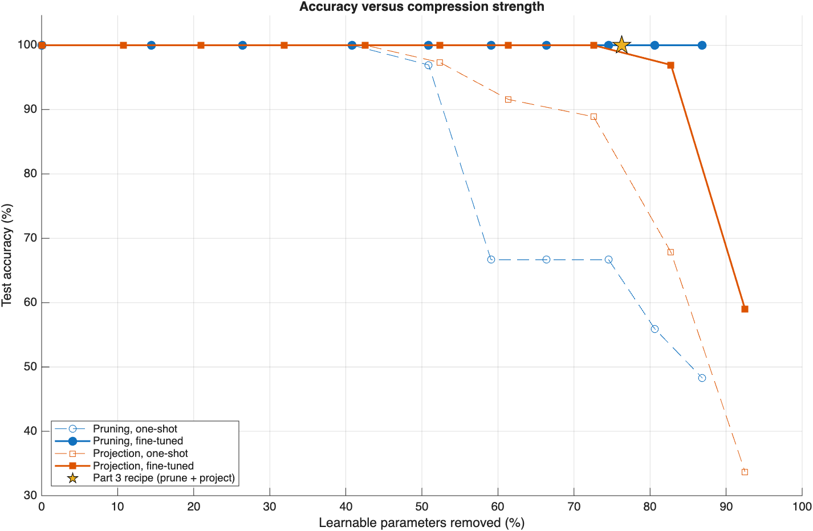
With fine-tuning, pruning keeps 100% test accuracy all the way to 87% reduction, and projection keeps it to about 73% before it collapses. The 76% reduction used below is a conservative choice. With only three test recordings per class, 100% test accuracy does not guarantee the same result on new recordings, and leaving some capacity in reserve makes the model more robust to how the board is held or mounted.
Prune and Project Network
Prune first, then project, and fine-tune after each step.
[netPruned,infoPruned] = compressNetworkUsingTaylorPruning(netCls,XTrain,TTrain,"crossentropy",optionsPruning, ...
LearnablesReductionGoal=0.5, ...
LearnablesReductionIncrement=0.05);Compressed network has 50.1% fewer learnable parameters. Pruning compressed 5 layers: "conv1d_2","batchnorm_2","conv1d_3","batchnorm_3","fc_1"
[netProjected,infoProjected] = compressNetworkUsingProjection(netPruned,XTrain, ...
InputDataFormats="TCB", ...
LearnablesReductionGoal=0.5);Compressed network has 50.2% fewer learnable parameters. Projection compressed 4 layers: "conv1d_2","conv1d_3","fc_1","fc_2"
| Stage | Learnables | Memory | Test accuracy |
|---|---|---|---|
| Original | 7,347 | 28.7 KB | 100% |
| Pruned | 3,636 | 14.2 KB | 100% |
| Pruned + projected | 1,745 | 6.8 KB | 100% |
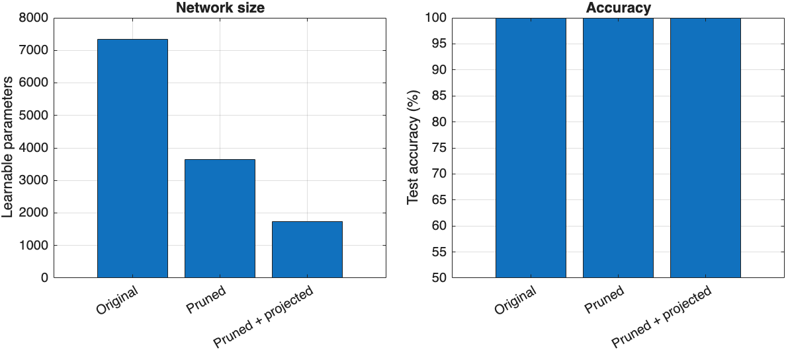
Because the classes are well separated, the network keeps its accuracy after a 76% reduction in learnables.
4Quantize Networks
quantObjCls = dlquantizer(netClsCompressed,ExecutionEnvironment="MATLAB");
prepareNetwork(quantObjCls);
calibrate(quantObjCls,arrayDatastore(XTrain(1:3:end),OutputType="same"));
netClsQ = quantize(quantObjCls,ExponentScheme="histogram");Quantize the autoencoder the same way and recompute the robust threshold with the quantized network (aeThreshold = 1.4048). The quantized autoencoder flags the same windows.
| Stage | Learnables | Parameter memory | Test accuracy |
|---|---|---|---|
| Original (float32) | 7,347 | 28.7 KB | 100% |
| Pruned + projected (float32) | 1,745 | 6.8 KB | 100% |
| Pruned + projected + quantized (int8) | 1,705 | 2.0 KB | 100% |
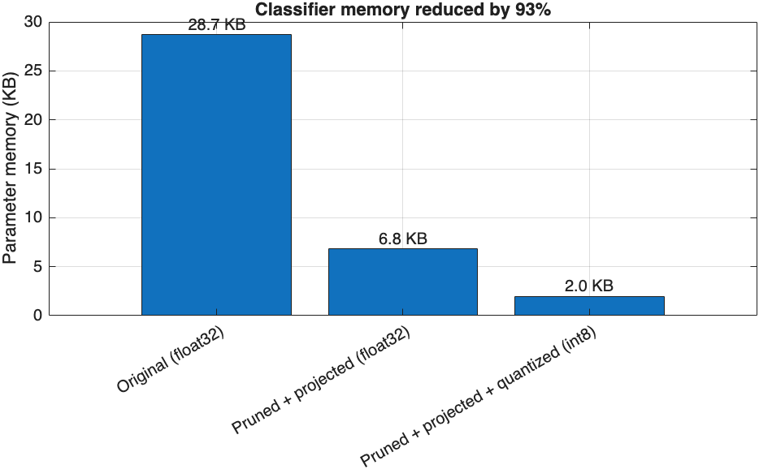
Part3a_ExploreCompression.m places this result in the full design space, with every option from the sweep at float32 and at the estimated int8 size. The pruning curve shows that an int8 classifier of about 1 KB would also be possible.
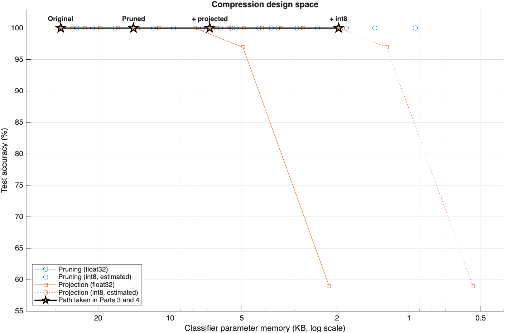
5Generate Code
The entry-point function vibrationSeverityDetect takes one 100-by-6 window and returns the level, the three class probabilities, the autoencoder score, and the unrecognized flag.
function [level,probabilities,aeScore,isUnrecognized] = vibrationSeverityDetect(window) %#codegen
persistent netCls netAE
if isempty(netCls)
netCls = coder.loadDeepLearningNetwork("models/netClsQ.mat");
netAE = coder.loadDeepLearningNetwork("models/netAEQ.mat");
end
params = coder.load("models/deploymentParams.mat");
x = (single(window) - mean(single(window),1)) ./ params.channelScale;
probabilities = extractdata(predict(netCls,dlarray(reshape(x',6,1,100),"CBT")));
[~,k] = max(probabilities);
level = int32(k - 1);
ci = (computeMotionIndicators(window) - params.ciMu) ./ params.ciSigma;
ciHat = extractdata(predict(netAE,dlarray(ci',"CB")));
aeScore = mean((ciHat - ci').^2);
isUnrecognized = level == 0 && aeScore > params.aeThreshold;
endThe code generation settings are the same as in the first tutorial: TargetLibrary="none", LargeConstantGeneration="KeepInSourceFiles", no dynamic memory, and the ARM Cortex-M device type. Verify the generated code with a MEX function on all 261 test windows:
levelAgreement = 1 medianRelativeDifferenceScore = 1.4674e-07 flagAgreement = 1
extern void vibrationSeverityDetect(const float window[600], int *level,
float probabilities[3], float *aeScore,
bool *isUnrecognized);6Deploy to Arduino
The sketch arduino/VibrationSeverityMonitor/VibrationSeverityMonitor.ino keeps the Arduino_LSM9DS1 library's default settings (119 Hz output data rate, ±4 g, ±2000 °/s), which match the recordings, and samples acceleration and angular rate every 10 ms. It shows blue only after 3 consecutive unrecognized windows, so a single small bump, such as a knock on the desk or a touch on the USB cable, does not make the LED flicker. Change kUnrecognizedWindows to adjust this.
unrecognizedCount = isUnrecognized ? unrecognizedCount + 1 : 0;
int state = (unrecognizedCount >= kUnrecognizedWindows) ? 3 : level;Sketch uses 112256 bytes (11%) of program storage space. Maximum is 983040 bytes. Global variables use 48344 bytes (18%) of dynamic memory, leaving 213800 bytes for local variables. Maximum is 262144 bytes.
Test the Monitor Live
With the board flashed, the board was left still, then tapped, then shaken gently, then left still again, while MATLAB read the serial output.
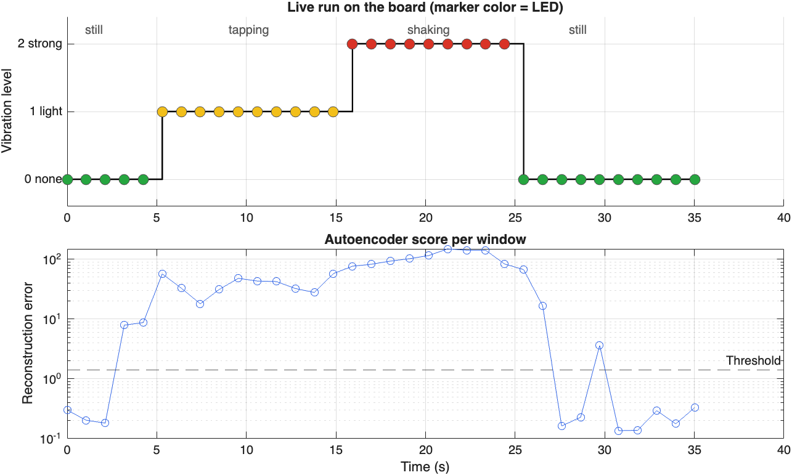
| Phase | Windows | Board output |
|---|---|---|
| Still | 5 | level 0 |
| Tapping | 10 | level 1 |
| Shaking | 9 | level 2 |
| Still | 10 | level 0 |
The classifier tracked every phase, with a confidence of 0.98–0.996 on all windows except the one where tapping started partway through (0.65). The autoencoder score rose above the threshold in five windows where the classifier reported level 0: two as a hand approached the board, two while the board settled after shaking, and one small bump. None lasted three windows, so the LED stayed green. Inference takes 65 ms per window on the 64 MHz Cortex-M4F.
Next Steps
- Add a level by recording 15 sessions of a new condition, for example a fan or phone vibrating under the board, and adding a class in Step 2.
- Reduce the delay by sampling into a second buffer while the detector runs, so that windows can overlap.
- Report the level over Bluetooth Low Energy with the ArduinoBLE library.
Supporting Files
| File | Description |
|---|---|
helpers/loadRecordings.m | Load the CSV recordings and resample them onto a uniform grid |
helpers/makeWindows.m | Cut recordings into fixed-length windows, keeping the recording index |
helpers/splitRecordings.m | Stratified train/validation/test split by recording |
helpers/computeMotionIndicators.m | 24 motion indicators per window (supports code generation) |
helpers/autoencoderScore.m | Mean squared reconstruction error |
helpers/networkSummary.m | Learnables and parameter memory of a network |
helpers/plotNetworkArchitecture.m | Layer diagram with the output size of each layer |
helpers/exportSimulinkDiagram.m | Picture of a network as Simulink layer blocks, arranged in rows |
helpers/exportCompressionAnalysis.m | Save the Analyze for Compression report of Deep Network Designer as an image |
helpers/accumulateTaylorScores.m | Taylor importance scores of all prunable filters, for pruning without retraining |
codegen/vibrationSeverityDetect.m | Entry-point function for code generation |
arduino/VibrationSeverityMonitor/ | Arduino sketch; the generated C code is copied to src/model/ |
data/raw/Vibration_Dataset/ | The 45 recordings (NORMAL, TAPPING, GENTLE_SHAKING) |
See Also
interp1 · fitctree · trainnet · testnet · compressNetworkUsingTaylorPruning · taylorPrunableNetwork · compressNetworkUsingProjection · neuronPCA · exportNetworkToSimulink · deepNetworkDesigner · dlquantizer · estimateNetworkMetrics · mad · codegen · coder.loadDeepLearningNetwork · serialport